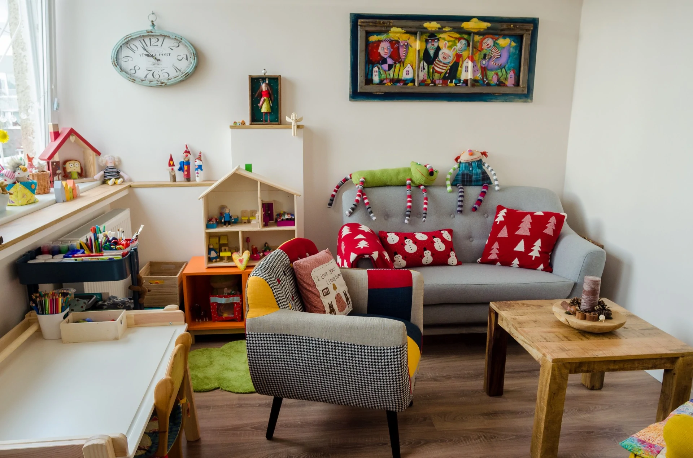

O mne
Dieťa vnímam v kontexte jeho rodiny.

Desať rokov som pracovala ako klinická psychologička na detskej onkológii a hematológii v Národnom ústave detských chorôb v Bratislave.
Stretávala som sa s deťmi, ich rodičmi, súrodencami a najbližšími. Táto skúsenosť formovala môj pohľad na človeka aj vzťahy v rodine. Od roku 2019 pracujem v súkromnej psychologickej praxi v Stupave.
Prax a vzdelanie
Skúsenosti zo školy, nemocnice aj ambulancie.
Moja odborná cesta zahŕňa prácu s deťmi, rodinami, mladými ľuďmi aj seniormi. Dnes sa venujem klientom v ambulancii klinickej psychológie v Stupave.
Odborné vzdelanie
- Psychológia na Filozofickej fakulte UKBratislava, 1990 – 1996
- Atestácia v klinickej psychológiiSlovenská zdravotnícka univerzita, 2013
- Psychoterapeutický výcvik podľa Virginie SatirovejSTAR T3, 2017 – 2022
- Certifikácia v psychoterapiiodborná spôsobilosť od roku 2023
Prax
- Práca s mladými ľuďmi a seniormiKlub nezamestnanej mládeže, centrum výchovno-psychologickej prevencie a Domov seniorov Archa v Bratislave.
- Súkromná škola Harmónia a FinesaBratislava.
- Národný ústav detských chorôbDetská onkológia a hematológia v Bratislave.
- Súkromná ambulancia klinickej psychológieStupava.
Odborné výstupy
Prednášky a publikácie
Vo svojej práci som sa venovala aj odborným témam detskej onkológie, psychoterapie a arteterapie. Tu je prehľad prednášok a príspevkov z rokov 2011 až 2012.
Prednášky na konferenciách
- Arteterapia v klinickej praxiPrednáška v DFNsP, Bratislava · júl
- Arteterapia a detská onkológiaMedzinárodná arteterapeutická konferencia Quo Vadis, Bratislava · apríl
- Komunikačné výzvy v detskej onkológiiXV. stretnutie detských hematológov, transfuziológov a onkológov, Bratislava · marec
- Význam skupinovej psychoterapie u adolescentov s osteosarkómomXXI. konferencia detských hematológov a onkológov ČR a SR, Ústí nad Labem · október
- Arteterapia v zdravotníctveKonferencia Arteterapia na Slovensku, Bratislava · september
- Psychosociálne aspekty liečby malígnych ochorení u adolescentovXXII. konferencia detských hematológov a onkológov ČR a SR, Bratislava · október
Články a príspevky v zborníkoch
- Význam skupinovej psychoterapie u adolescentov s osteosarkómomZ. Krištínová, P. Krajmer · zborník XXI. konferencie detských hematológov a onkológov ČR a SR, s. 72
- Arteterapia a detská onkológiaZ. Krištínová · časopis Arteterapie, č. 26, s. 68–71
- Arteterapia a detská onkológiaZ. Krištínová · zborník konferencie Quo Vadis (Art) Terapia?, s. 89–93
- Psychosociálne aspekty liečby malígnych ochorení u adolescentov – tímová spoluprácaZ. Krištínová, P. Krajmer, E. Kaiserová, J. Puškáčová · zborník XXII. konferencie detských hematológov a onkológov ČR a SR, s. 101
Ako pracujem
Každá spolupráca má vlastné tempo.
Zameriavam sa na rodinnú psychoterapiu a prácu s celým rodinným systémom. Podľa situácie využívam aj ďalšie terapeutické prístupy.
Transformačná systemická terapia podľa Virginie Satirovej
Psychotraumatológia a EMDR
Arteterapia a terapia v piesku
Sprevádzanie detí a rodín v smútení
Kontakt
Napíšte mi, s čím potrebujete pomôcť.
Na úvod stačí stručná správa. Termín si dohodneme po prvom kontakte.